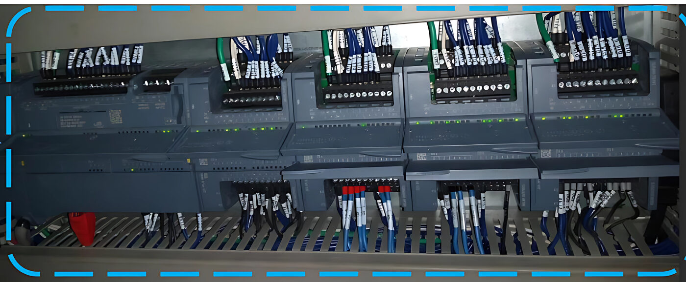
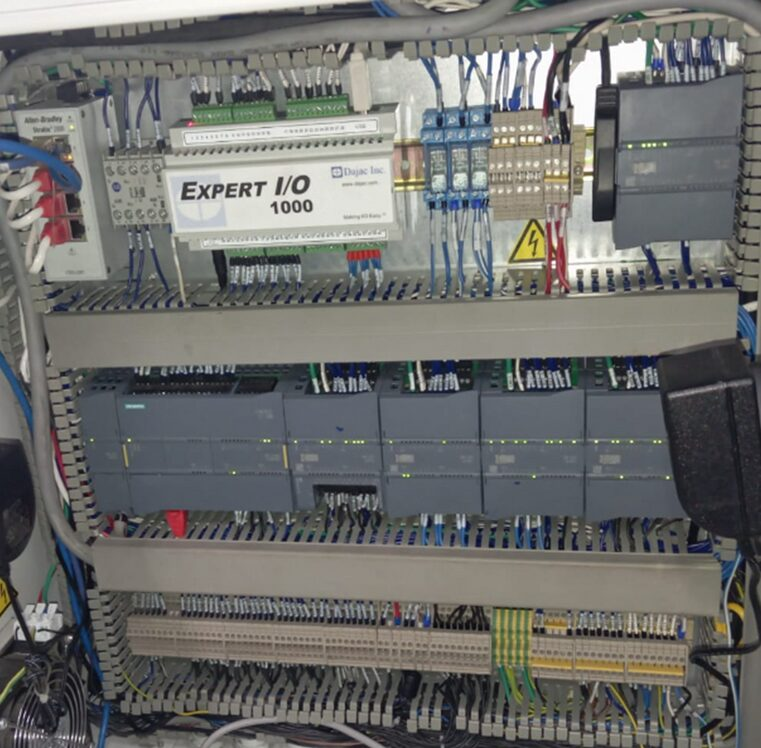

Designed, built and programmed a 4-position indexing photometric test station for Valeo Sistemas Eléctricos to automatically inspect three automotive headlamp models (LB Spot, LB Wide, HB) — including validating and correcting deficiencies in a design the client had already supplied.
The 4-position indexing table carries two part nests per station. Each position aligns the headlamp via Dajac sensors before photometric measurement; the PLC drives indexing, clamping and safety interlocks, with dedicated HMI screens for process, manual, alarms and I/O.

